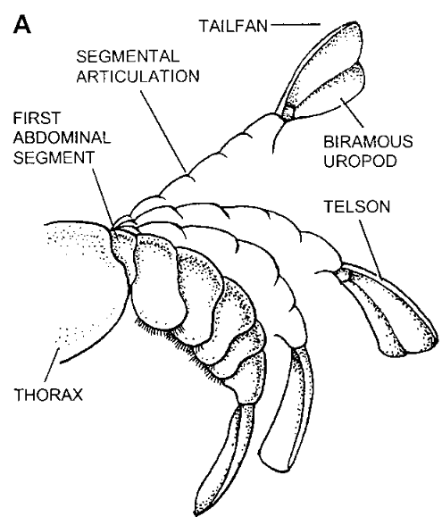
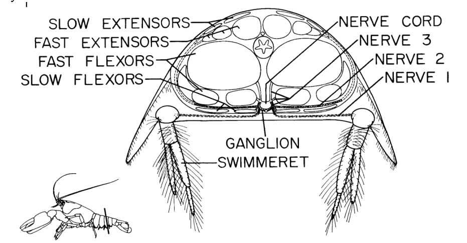
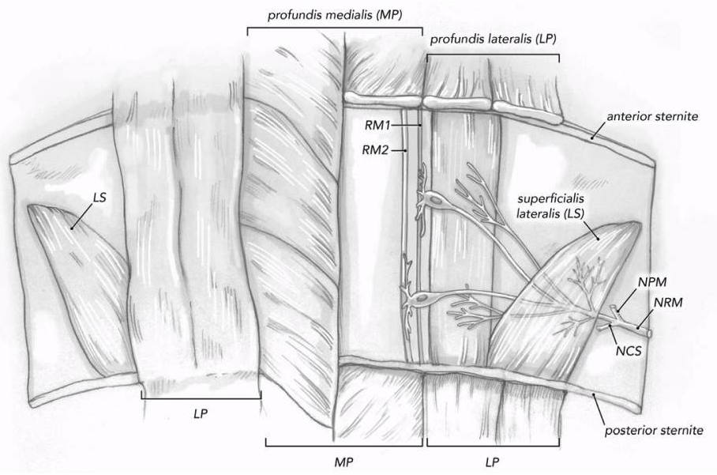
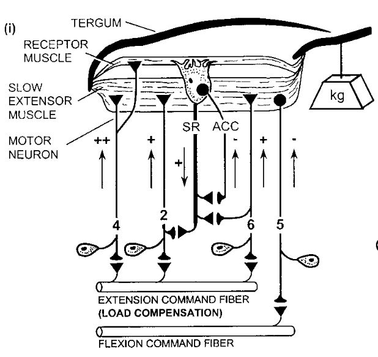
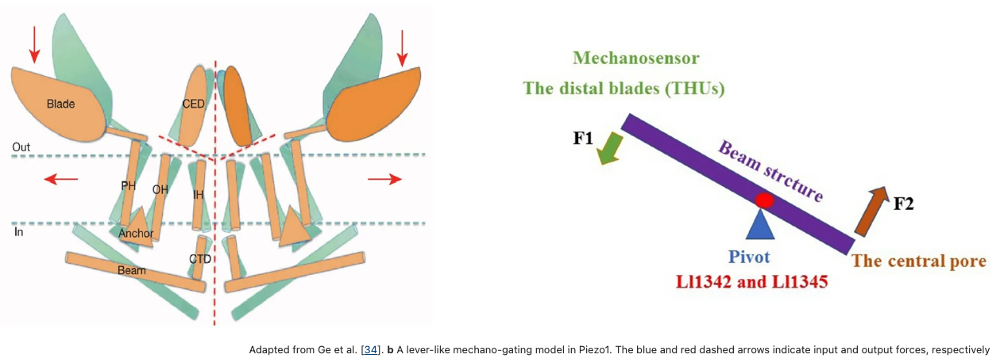

Week 8. Muscle Receptor Organ
Contents
Week 8. Muscle Receptor Organ¶
Posture¶
Like any set of jointed rigid body segments, the crayfish tail can assume a variety of postures (shapes).
Several muscles control the posture and movement of the tail. The extensor muscles straighten the tail and the flexor muscles curl the tail. Fast muscles are large and recruited for powerful movement. Slow muscles are small and recruited for fine postural control.
Proprioception¶
Knowledge about the position and posture of the body is required to control directed movements of the body.
Stretch-sensitive receptors are a type of proprioceptor that is embedded in or parallel to muscle fibers. In humans, we call these receptor-muscle pairings muscle spindle organs and in crustaceans we call these muscle receptor organs (MROs). What information do proprioceptors encode? How does spike rate encode that information? What factors explain changes in proprioceptors spiking activity? You will investigate these questions by extracellularly measuring the electrical activity of MRO receptor neuron axons.
In crayfish, the superficial extensor receptor muscle (RM) on each side of each abdominal segment (and in the two most posterior thoracic segments) are innervated by stretch-sensitive receptors.
The superficial extensor muscles span adjacent segments, running from one tergite to the next. When these muscles contract, they pull the tergites together, causing the abdomen to straighten and extend (thus the name). Conversely, when the abdomen is curled ventrally, the tergites rotate around their joints and the extensor muscles are stretched, along with their associated MROs. MRO neurons receive inhibitory synaptic innervation from the central ganglion (this does not occur in vertebrate proprioceptors). These inhibitory inputs depress the receptor activity.
The sensory neurons of the crayfish MROs provide readily accessible preparations for the quantitative study and modeling of sensory transduction. Additionally, many essential aspects of their biophysical properties and behavioral control functions remain to be elucidated.
Mechanotransduction¶
The biophysical understanding of the ionic events underlying adaptation in the crayfish MROs has focused on the ability of stretch-sensitive channels in the MRO membranes. The stretch-activated channels mediate adaptation of the receptor current by admitting calcium ions which act internally to activate a potassium current responsible for the fast phase of receptor current adaptation (Erxleben, 1989, 1993; Rydqvist et al., 2007). Presumably the fast and slow MROs differ in the number and sensitivity of the stretch-activated channels and the kinetics of activation of the calcium-sensitive potassium channels.1
A leading candidate for the deformation-sensitive MRO sensory neuron membrane channels is one or more of the newly described mechanosensitive piezo family of ion channels (Woo et al., 2015; Haselwandter and MacKinnon, 2018; Zhao et al., 2018). Based on the unique topological features of the mPiezo1 channel, a lever-like mechanotransduction mechanism to explain its extraordinary mechanosensitivity was proposed [34, 4]. In the mPiezo1 channel, the curved blades composed of THUs can act as a mechanosensor, while the beam structure, with the residues Ll1342 and Ll1345 acting as a pivot, can act as a lever-like apparatus. Coupling the distal blades and central pore through the lever-like apparatus converts mechanical force into a force used for cation conduction. Essentially, changes in membrane curvature lead to a gating force applied to the Piezo1 channel.1
Experimental Design¶
Practice in the use of modern methods of data analysis requires the generation of data sets containing reproducible neural responses produced by systematic and quantitative variation of relevant stimulus parameters. For the crayfish MRO, this means manipulation of stretch speed and the extent of either transient or maintained stretch, preferably under software control. A device to impose reproducible and quantitative translational movements on the crayfish abdomen during recordings is also required.
Importantly, there are only two MRO cell types innervating each segmental superficial extensor muscle in crustaceans. The axons of the two MROs travel together from their dorsal muscles, laterally around the large abdominal muscles, to the ventral nerve cord to enter the abdominal ganglia as part of the second ganglionic nerve (nerve 2). The spiking activity of individual sensory receptors neurons is therefore easily detected.
Pages:¶
Additional Resources¶
On the ionic mechanisms of adaptation in an isolated mechanoreceptor –an electrophysiological study
Structure and Function Relationship in the Abdominal Stretch Receptor Organs of the Crayfish
Insights for Robotic Design From Studies of the Control of Abdominal Position in Crayfish
A major cause of the early adaptive fall of the receptor potential seems to be an outward K+ current activated by the stretch-induced depolarization. Swerup, C (1983) On the ionic mechanisms of adaptation in an isolated mechanoreceptor –an electrophysiological study. Acta physiologica Scandinavica, Vol.520, p.1-43